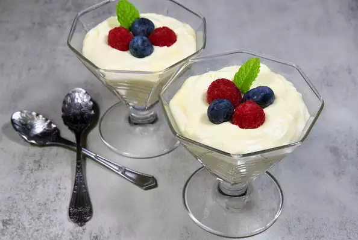

Easy Lemon Mousse

Enjoy the simplicity of a homemade, but quick and easy lemon mousse served with fresh berries and a sprig of mint on top.
It is rich, so you may find a smaller serving is appropriate, in which case you'll get 6 servings.
Ingredients
- ½ cup heavy cream
- 1 tablespoon confectioners' sugar
- 4 ounce packaged cream cheese, softened
- 1½ cups lemon curd
- ½ teaspoon vanilla extract
- 4 tablespoons mixed fresh berries
- 4 fresh mint leaves
Recipe Instructions
- Beat heavy cream in a chilled glass or metal bowl with an electric mixer until frothy.
- Add confectioners' sugar gradually, continuing to beat until stiff peaks form, starting on low speed and increasing to high speed, for about 2 minutes; set aside.
- Beat cream cheese in a bowl with an electric mixer until lump free, 1 to 2 minutes. Add the lemon curd and vanilla extract and mix until smooth and creamy, 1 to 2 minutes.
- Fold whipped cream into the lemon mixture until just combined. Divide mousse equally among 4 dessert dishes or ramekins. Chill for at least 1 hour before serving.
- Garnish with fresh berries and mint leaves.
Nutrition Facts
Per Serving: 545 calories; fat 26g; cholesterol 148.3mg; sodium 171.6mg; carbohydrates 80.9g; protein 2.8g.
Return to top
Return to Main Menu